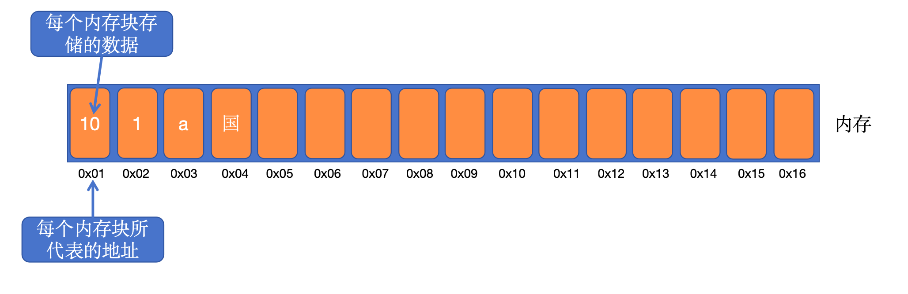
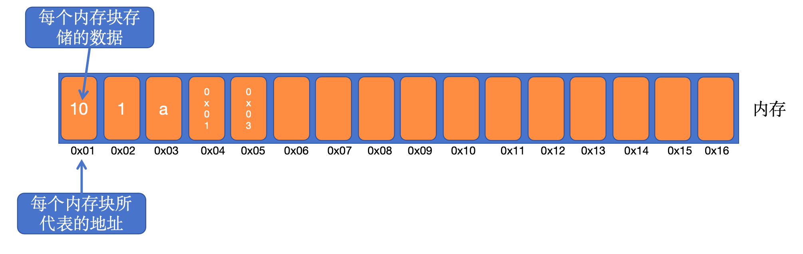

指针和函数指针
指针
1 | 指针，是C语言中的一个重要概念及其特点，也是掌握C语言比较困难的部分。 |

指针变量
1 | 指针变量用于保存变量的地址 |
- 内存角度:指针变量、普通变量没有啥区别，都是一块内存，并且这块内存都有地址。唯一的区别：普通变量存储数据，指针变量存储地址
- 语法角度: 指针变量多了个标识
*，以此表示这个变量中存储的是地址。
- 普通变量有普通变量运算规则，指针变量有指针变量的运算规则。 如取值、赋值、加减运算
- 指针无论什么类型、无论几级指针统统都是4个字节(32位) 8字节(64位)。因为他们存储的是一个内存地址，而内存地址大小是固定的。
- 在相同平台上，无论什么类型的指针占用内存大小都是一样的。
- 对指针变量取地址，才能拿到指针变量本身所占用的空间地址。如果直接使用指针变量，那么代表的是指针指向空间的地址。
指针 操作符

&
1 | 取地址符：取存储变量的内存地址 |
*
1 | 取内容符：取地址中存放的数据 |
指针声明
1 | 指针变量声明的一般形式为： type * var_name = value; |
野指针
1 | 指向非法的内存地址指针叫作野指针（Wild Pointer），也叫悬挂指针（Dangling Pointer），意为无法正常使用的指针。 |
空指针
1 | 空指针（Null Pointer）是一个不指向任何内存位置的指针。它存储段的基地址。空指针基本上存储了空值，而void是指针的类型。 |

1 | //定义了一个普通int类型变量num，他的值为10.对应上图就是0x01内存块中存储的内容 |
指针类型
1 | 1、在定义指针的时候，前面的类型就是指针类型。如： |
运算
本博客所有文章除特别声明外，均采用 CC BY-NC-SA 4.0 许可协议。转载请注明来自 East'blog！